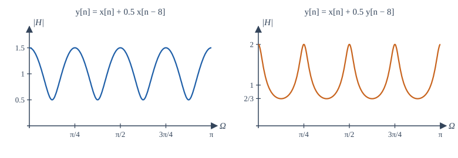
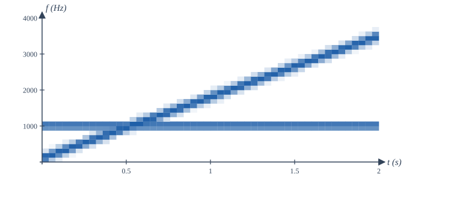
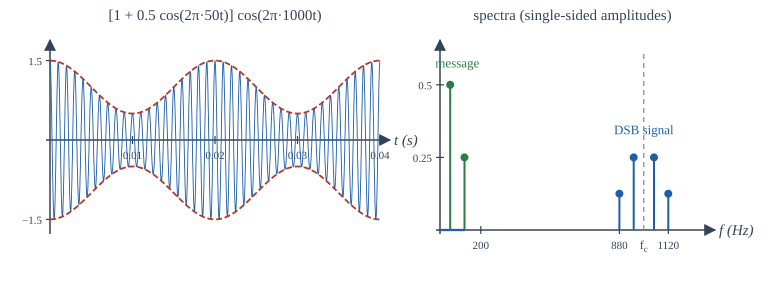
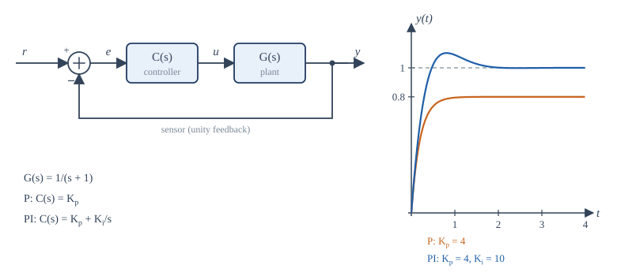

Chapter 14: Applications: Audio, Communication and Control¶
The tools of the book at work in three fields of engineering
Learning outcomes
After this chapter you should be able to:
- model echoes and reverberation as comb filters and read their frequency responses;
- explain the short-time Fourier transform and read a spectrogram;
- describe amplitude modulation, synchronous and envelope demodulation, and frequency-division multiplexing in terms of spectra;
- explain how bandwidth, intersymbol interference and the FFT enter digital communication;
- analyse a simple feedback loop: closed-loop poles, steady-state error with proportional and integral control, and stability margins;
- implement a controller as a difference equation.
14.1 One toolkit, many fields¶
Every application in this chapter follows the same pattern. A physical quantity becomes a signal; a system (a room, a radio channel, a motor) acts on it; and an engineer designs another system (an equaliser, a receiver, a controller) to get the desired result. The language is always the language of this book: convolution, frequency response, poles and zeros, sampling. Only the vocabulary of each field changes. The three sections below are short introductions, intended to show the ideas at work and to point the way to further study.
14.2 Audio¶
Digital audio in numbers¶
Sound is a pressure wave; a microphone turns it into a voltage; an anti-aliasing filter and an analog-to-digital converter turn the voltage into samples (Figure 9.4). Human hearing spans roughly 20 Hz to 20 kHz, so the compact disc format samples at 44.1 kHz with 16 bits per sample, giving a quantization SNR of about 98 dB (Section 9.7). Professional recording commonly uses 48 kHz or more and 24 bits, which leaves room for processing without adding audible noise. Speech for telephony needs much less: the classic telephone channel passes about 300 Hz to 3.4 kHz and is sampled at 8 kHz.
Echo and reverberation as comb filters¶
A single echo, a copy of the sound delayed by \(D\) samples and scaled by \(\alpha\), is the FIR system
Its magnitude \(|1 + \alpha e^{-j\Omega D}|\) swings between \(1 + |\alpha|\) and \(1 - |\alpha|\), with peaks at \(\Omega = 2\pi k/D\), that is every \(f_s/D\) Hz. Plotted against frequency, the response looks like the teeth of a comb, which gives the system its name, the comb filter. A delay of 0.25 s at 8 kHz (\(D = 2000\)) puts the teeth only 4 Hz apart: we hear such an echo as a distinct repetition, not as a change of tone. A very short delay (a few milliseconds) spreads the teeth hundreds of hertz apart and colours the sound audibly, the "hollow" quality of a voice next to a hard wall.
Feeding the delayed output back gives the recursive comb
whose impulse response is an endless train of echoes \(\delta[n] + \alpha\delta[n - D] + \alpha^2\delta[n - 2D] + \cdots\), decaying by \(\alpha\) each time. Its \(D\) poles lie on a circle of radius \(|\alpha|^{1/D}\), inside the unit circle when \(|\alpha| < 1\). Artificial reverberation combines several such combs, with different delays, and some all-pass sections that scatter the echoes in time, to imitate the dense, decaying echo pattern of a hall. A real room is itself an LTI system to a good approximation: recording its impulse response (with a sharp clap or a specially designed test signal) and convolving dry recordings with it, usually by FFT, places the music in that room.

Equalisers¶
An equaliser adjusts the balance of frequencies: more bass, less harshness, a notch at a feedback frequency. Digital equalisers are almost always built from cascaded second-order IIR sections ("biquads"), each with two poles and two zeros, placed by the reasoning of Section 11.7: poles near the unit circle at a chosen angle make a boost, zeros near it make a cut, and the radii set the width. A graphic equaliser with ten bands is ten such sections in cascade, and by Section 4.5 their order does not matter.
The spectrogram¶
A Fourier transform of a whole recording says which frequencies occur but not when. Music and speech change from moment to moment, so audio analysis uses the short-time Fourier transform (STFT): slide a window (Section 8.5) along the signal, take an FFT of each windowed segment, and stack the spectra side by side. The magnitude, drawn as brightness against time and frequency, is a spectrogram.

The choice of window length is the time-bandwidth trade-off of Section 6.7 in practical form. A long window gives fine frequency resolution (bins \(f_s/L\) apart) but blurs events in time; a short window catches rapid changes but smears frequencies. Speech analysis typically uses windows of 20 to 30 ms. The spectrogram is the everyday instrument of audio engineers, phoneticians and anyone who studies birdsong or machine vibration.
Perceptual audio coders, which shrink music files by a large factor, are built on the same foundation: they split the signal into frequency bands with a transform closely related to the DFT (the modified discrete cosine transform), and spend bits only where the ear will notice the quantization noise.
14.3 Communication¶
The channel as a system¶
A communication channel (a cable, an optical fibre, the radio path between two antennas) is modelled, to a first approximation, as an LTI system followed by additive noise:
where \(s\) is the transmitted signal, \(h_c\) the channel impulse response and \(w\) the noise. The frequency response \(H_c(j\omega)\) says which frequencies the channel passes; its bandwidth limits how fast information can be sent. Much of communication engineering is the design of signals that suit the channel, and of receivers that undo its effects.
Amplitude modulation¶
Section 6.6 showed that multiplying a message \(m(t)\) by a carrier \(\cos\omega_ct\) moves its spectrum to \(\pm\omega_c\). This is double-sideband suppressed-carrier (DSB-SC) modulation. A message of bandwidth \(W\) occupies \(2W\) around the carrier: the upper sideband above \(\omega_c\) and the lower sideband below it. The receiver recovers the message by synchronous demodulation (Example 6.7): multiply by the same carrier and low-pass filter. The catch is that the receiver's carrier must match the transmitter's in frequency and phase; a phase error \(\theta\) scales the recovered message by \(\cos\theta\), and an error of \(90°\) makes it vanish.
Conventional AM, used for medium-wave broadcasting, avoids that difficulty by sending the carrier as well:
with modulation index \(0 < \mu \le 1\). Because \(1 + \mu m(t)\) never goes negative, the message rides on the peaks of the carrier as its envelope (Figure 14.3). A simple envelope detector (a diode, a capacitor and a resistor) follows the peaks and recovers the message without any local carrier. The cost is power: with \(\mu = 1\) and a sinusoidal message, two-thirds of the transmitted power is in the carrier, which carries no information.

Frequency-division multiplexing (FDM) puts many messages on one channel by giving each its own carrier, spaced far enough apart that the spectra do not overlap. A receiver selects one with a band-pass filter, then demodulates it. Broadcast radio and television, and the original long-distance telephone networks, are all FDM systems, and the design of the filters that separate the channels is a direct application of Chapter 12.
Digital communication¶
In digital communication the message is a sequence of symbols (bits, or groups of bits), each sent as a pulse \(p(t)\) whose amplitude or phase encodes the symbol: \(s(t) = \sum_k a_k\,p(t - kT_s)\), with one symbol every \(T_s\) seconds. Two signals-and-systems facts govern the design.
- Bandwidth and symbol rate. By the time-bandwidth trade-off, shorter symbols need more bandwidth. A channel of bandwidth \(B\) Hz can carry at most about \(2B\) independent pulses per second without mutual interference, a limit that is the sampling theorem read in reverse. Pulses are shaped (with spectra that roll off smoothly, such as the raised-cosine family) to use the band efficiently.
- Intersymbol interference. The channel convolves each pulse with \(h_c\), spreading it in time so that it overlaps its neighbours. This intersymbol interference (ISI) is removed by an equaliser, a filter that approximates the inverse of the channel (Section 3.6), often adapted continuously as the channel changes.
Modern wireless and wired systems (Wi-Fi, 4G and later cellular systems, many digital television systems, and DSL over telephone lines) use orthogonal frequency-division multiplexing (OFDM), which is the DFT put to work. The transmitter places data symbols on \(N\) closely spaced subcarriers and generates the sum of all the modulated subcarriers with a single inverse FFT; the receiver separates them with a forward FFT. A short cyclic prefix, a copy of the end of each block placed before it, turns the channel's linear convolution into a circular one (Section 8.4), so that the channel becomes a simple multiplication of each subcarrier by \(H_c\) at its frequency, which one complex division per subcarrier undoes.
14.4 Control¶
The feedback loop¶
A control system makes a physical plant (a motor, a heater, an aircraft, a chemical process) follow a desired reference \(r(t)\). Figure 14.4 shows the standard loop: a sensor measures the output \(y\), the error \(e = r - y\) is formed, and a controller \(C(s)\) computes the input \(u\) to the plant \(G(s)\). By Section 10.5 the closed-loop transfer function is
The product \(L(s) = C(s)G(s)\) is the loop transfer function. The closed-loop poles are the roots of \(1 + L(s) = 0\).

Feedback offers three benefits that no open-loop arrangement can match. It reduces sensitivity to the plant: if \(|L| \gg 1\), then \(T \approx 1\) whatever the exact \(G\), so an ageing motor or a change of load hardly affects the result. It rejects disturbances: a disturbance entering at the plant output is reduced by the factor \(1/(1 + L)\). And it can stabilise an unstable plant (Example 10.7). The price is the risk of instability, because a loop with too much gain and too much delay oscillates.
Steady-state error: proportional and integral control¶
Take the plant \(G(s) = \frac{1}{s + 1}\), a first-order lag with unit DC gain.
Proportional control, \(C(s) = K_p\), gives \(T(s) = \frac{K_p}{s + 1 + K_p}\). The closed-loop pole moves from \(-1\) to \(-(1 + K_p)\), so the response is faster. For a unit step reference, the final value theorem gives
With \(K_p = 4\) the output settles at 0.8, a steady-state error of 20%. Raising the gain reduces the error but never removes it, and in a real system large gains amplify noise and excite unmodelled dynamics.
Proportional-integral (PI) control, \(C(s) = K_p + \frac{K_i}{s}\), adds a term proportional to the integral of the error. Then
The steady-state error to a step is zero: as long as any error remains, the integral keeps growing and pushes the output on, so the loop can come to rest only when the error is zero. With \(K_p = 4\) and \(K_i = 10\) the closed-loop poles are the roots of \(s^2 + 5s + 10\), namely \(-2.5 \pm 1.94j\), with \(\zeta \approx 0.79\). The response (Figure 14.4) overshoots by about 10%, more than \(\zeta\) alone would suggest, because the closed-loop zero at \(s = -2.5\) speeds up the initial rise. Adding a derivative term gives the PID controller, the workhorse of industrial control.
Stability margins¶
How close is a feedback loop to instability? The loop goes unstable when \(1 + L(j\omega) = 0\) for some \(\omega\), that is when \(L(j\omega) = -1\): a gain of exactly 1 together with a phase of \(-180°\). The Bode plot of \(L\) measures the distance from that point:
- the gain margin is the factor by which the gain could rise, at the frequency where the phase of \(L\) is \(-180°\), before \(|L|\) reached 1;
- the phase margin is the additional phase lag that could be tolerated, at the frequency where \(|L| = 1\), before the phase reached \(-180°\).
Designers commonly aim for a phase margin of roughly 45° to 60°, which (for loops that behave like second-order systems) corresponds to well-damped responses. A pure time delay \(e^{-sT_d}\) in the loop (in sensing, computation or transport) adds phase lag \(-\omega T_d\) without changing the gain, and eats into the phase margin; this is why delays are the enemy of control.
Digital implementation¶
Today almost every controller is a program. The error is sampled every \(T\) seconds, the control law runs as a difference equation, and the output is held by a DAC (a zero-order hold) until the next sample. A PI controller, for example, becomes
which replaces the integral by a running sum. The sampling rate must be well above the bandwidth of the loop (often 10 to 30 times), because the hold and the computation add delay, and delay costs phase margin. For more exact designs, the plant is discretised as in Section 13.6 and the controller designed directly in the z-domain, with the closed-loop poles placed inside the unit circle.
14.5 Applications in NumPy¶
The program below checks three statements of this chapter: the comb response of a 0.25 s echo, DSB-SC modulation and synchronous demodulation (using the FFT as an ideal low-pass filter), and the final values of the P and PI loops of Figure 14.4, simulated with small Euler steps.
import numpy as np
# 1. Echo: y[n] = x[n] + 0.5 x[n - D] is a comb filter with peaks every fs/D Hz
fs, D = 8000, 2000 # a 0.25 s echo at 8 kHz
f = np.array([0, 2, 4, 6]) # Hz
H = 1 + 0.5 * np.exp(-2j * np.pi * f / fs * D)
print("echo |H| at 0, 2, 4, 6 Hz:", np.round(np.abs(H), 3))
# 2. Amplitude modulation and synchronous demodulation, using the FFT as an ideal filter
fs, N = 10_000, 10_000 # 1 s of signal, 1 Hz bins
t = np.arange(N) / fs
m = np.cos(2 * np.pi * 50 * t) + 0.5 * np.cos(2 * np.pi * 120 * t) # message
c = np.cos(2 * np.pi * 1000 * t) # 1 kHz carrier
s = m * c # DSB-SC signal
S = np.abs(np.fft.rfft(s)) * 2 / N
print("spectral lines of s(t) at:", np.flatnonzero(S > 0.1), "Hz")
v = 2 * s * c # mix down again: m + m cos(2 wc t)
V = np.fft.rfft(v)
V[200:] = 0 # ideal low-pass filter at 200 Hz
m_hat = np.fft.irfft(V, n=N)
print(f"largest error in recovered message: {np.max(np.abs(m_hat - m)):.1e}")
# 3. Feedback control of G(s) = 1/(s + 1): proportional versus proportional-integral
def simulate(Kp, Ki, T=10.0, h=1e-3):
y, integ, out = 0.0, 0.0, []
for _ in range(int(T / h)):
e = 1.0 - y # unit-step reference
integ += e * h
u = Kp * e + Ki * integ
y += h * (-y + u) # plant y' = -y + u (Euler step)
out.append(y)
return np.array(out)
for Kp, Ki in ((4, 0), (4, 10)):
y = simulate(Kp, Ki)
print(f"Kp = {Kp}, Ki = {Ki:2d}: final value {y[-1]:.4f}, peak {y.max():.3f}")
print("closed-loop poles with PI:", np.roots([1, 5, 10]))
echo |H| at 0, 2, 4, 6 Hz: [1.5 0.5 1.5 0.5]
spectral lines of s(t) at: [ 880 950 1050 1120] Hz
largest error in recovered message: 2.1e-13
Kp = 4, Ki = 0: final value 0.8000, peak 0.800
Kp = 4, Ki = 10: final value 1.0000, peak 1.102
closed-loop poles with PI: [-2.5+1.93649167j -2.5-1.93649167j]
The echo's comb teeth are 4 Hz apart, as predicted. Because every frequency in the test signal falls exactly on a bin, the FFT filter recovers the message to rounding error; with real signals a practical low-pass filter (Chapter 12) is used instead. The simulated loops settle at \(K_p/(1 + K_p) = 0.8\) and at 1, and the PI loop overshoots by 10%.
14.6 Summary¶
Summary
- Audio: echoes are FIR combs \(1 + \alpha z^{-D}\), recursive echoes are IIR combs \(1/(1 - \alpha z^{-D})\) with teeth every \(f_s/D\) Hz; equalisers are cascades of biquads; the STFT and spectrogram show how spectra change in time, with window length setting the time-frequency trade-off.
- Communication: a channel is an LTI system plus noise. DSB-SC shifts the message spectrum to \(\pm\omega_c\) and needs synchronous demodulation; conventional AM adds the carrier so an envelope detector suffices. FDM shares a channel by frequency. Digital links trade symbol rate against bandwidth, fight ISI with equalisers, and (in OFDM) use the FFT with a cyclic prefix to make the channel a per-subcarrier multiplication.
- Control: the closed loop is \(CG/(1 + CG)\); feedback reduces sensitivity and disturbances and can stabilise. Proportional control leaves a step error \(1/(1 + K_p)\); integral action removes it. Gain and phase margins measure distance from instability; delay erodes phase margin. Digital controllers are difference equations.
14.7 Exercises¶
Exercise 14.1
An echo arrives 50 ms after the direct sound, at 0.6 times its amplitude, with \(f_s = 48\) kHz. Write the difference equation and find the spacing of the comb teeth.
Answer
\(D = 0.05 \times 48000 = 2400\): \(y[n] = x[n] + 0.6\,x[n - 2400]\). Teeth every \(48000/2400 = 20\) Hz, with gain between 1.6 and 0.4.
Exercise 14.2
Where are the poles of the recursive comb \(H(z) = 1/(1 - 0.5z^{-4})\), and is it stable?
Answer
\(z^4 = 0.5\), so four poles of radius \(0.5^{1/4} \approx 0.841\) at angles \(0, \pi/2, \pi, 3\pi/2\). All inside the unit circle: stable.
Exercise 14.3
A spectrogram uses a 512-sample window at \(f_s = 16\) kHz. What are its frequency bin spacing and the duration of each window?
Answer
Bins \(16000/512 = 31.25\) Hz apart; each window lasts \(512/16000 = 32\) ms.
Exercise 14.4
A message band-limited to 5 kHz is sent by DSB-SC on a 100 kHz carrier. What band does it occupy, and how much spectrum does it use?
Answer
95 kHz to 105 kHz: a bandwidth of 10 kHz, twice the message bandwidth.
Exercise 14.5
In synchronous demodulation of \(m(t)\cos\omega_ct\), the receiver's carrier is \(\cos(\omega_ct + \theta)\). Show that the recovered message is \(\frac12 m(t)\cos\theta\).
Answer
\(m\cos\omega_ct\cos(\omega_ct + \theta) = \frac12 m[\cos\theta + \cos(2\omega_ct + \theta)]\). The low-pass filter removes the term at \(2\omega_c\), leaving \(\frac12 m(t)\cos\theta\).
Exercise 14.6
For conventional AM with a sinusoidal message and modulation index \(\mu\), the carrier power is proportional to \(1\) and the sideband power to \(\mu^2/2\). What fraction of the power carries the message when \(\mu = 1\)?
Answer
\(\frac{\mu^2/2}{1 + \mu^2/2} = \frac{0.5}{1.5} = \frac13\).
Exercise 14.7
With \(G(s) = \frac{2}{s + 1}\) and proportional control \(K_p\), find the steady-state error to a unit step and the value of \(K_p\) that makes it 5%.
Answer
\(T(0) = \frac{2K_p}{1 + 2K_p}\), so \(e(\infty) = \frac{1}{1 + 2K_p}\). For 0.05: \(1 + 2K_p = 20\), \(K_p = 9.5\).
Exercise 14.8
For the PI loop of Section 14.4 with \(K_p = 4\), which values of \(K_i > 0\) give a closed loop that is stable? Which give real (non-oscillatory) poles?
Answer
The characteristic polynomial \(s^2 + 5s + K_i\) has both roots in the left half-plane for every \(K_i > 0\). The roots are real when \(25 - 4K_i \ge 0\), that is \(K_i \le 6.25\).
Exercise 14.9
A loop has a phase margin of 50° at a gain crossover frequency of 10 rad/s. How much pure time delay can be added before the loop becomes unstable?
Answer
The delay adds phase \(-\omega T_d\). At 10 rad/s, \(50° = 0.873\) rad, so \(T_d = 0.0873\) s, about 87 ms (assuming the crossover frequency is unchanged, which it is, since a delay does not change the gain).
Exercise 14.10
Write the recursive PI difference equation for \(K_p = 2\), \(K_i = 5\) and \(T = 0.01\) s, and compute \(u[0]\) and \(u[1]\) for \(e[0] = 1\), \(e[1] = 0.8\), starting from \(u[-1] = 0\) and \(e[-1] = 0\).
Answer
\(u[n] = u[n-1] + 2(e[n] - e[n-1]) + 0.05\,e[n]\). Then \(u[0] = 0 + 2(1) + 0.05 = 2.05\) and \(u[1] = 2.05 + 2(-0.2) + 0.04 = 1.69\).
14.8 Quiz¶
Check your understanding of Chapter 14
Exercise 1
An echo delayed by 100 samples at 8 kHz makes comb teeth how many hertz apart?
Answer
80 / 80 Hz
Exercise 2
In a spectrogram, a longer analysis window gives
- finer frequency resolution and coarser time resolution
- finer time resolution and coarser frequency resolution
- both finer
- no change
Answer
finer frequency resolution and coarser time resolution
Exercise 3
DSB-SC modulation of a message of bandwidth W occupies a bandwidth of
- 2W
- W
- W/2
- 4W
Answer
2W
Exercise 4
Why can conventional AM be received with a simple envelope detector?
- the carrier is transmitted, so the envelope follows 1 + μm(t)
- it uses no carrier
- it is digital
- its bandwidth is zero
Answer
the carrier is transmitted, so the envelope follows 1 + μm(t)
Exercise 5
OFDM transmitters generate their many subcarriers with
- an inverse FFT
- a bank of analog oscillators only
- a comb filter
- a PID controller
Answer
an inverse FFT
Exercise 6
With G(s) = 1/(s + 1) and proportional gain Kp = 9, what is the steady-state output for a unit-step reference?
Answer
0.9 / 9/10
Exercise 7
Which controller term removes the steady-state error to a step for this plant?
- integral
- proportional
- a pure delay
- a larger sensor gain
Answer
integral